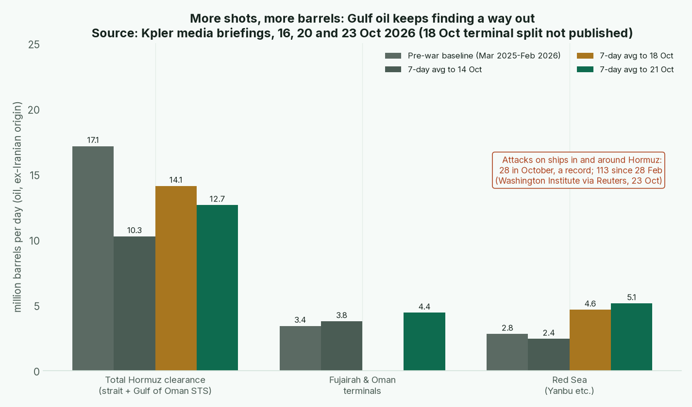

Issue #3 · Sunday 25 Oct 2026 · Warren for Tyler · Back to the master Board Position · Previous issue: 2026-10-18
Tyler, one score moved this week, by one point. Nothing moved two.
When I was a boy, a fellow ran the only ferry across our stretch of river. One spring the county put a plank bridge in a mile upstream, and the ferryman took to standing on the bank throwing rocks at wagons on it. He hit more wagons that spring than ever before. More wagons crossed every week anyway, because a dented wagon cost less than missing market day.
That's Iran this week.
The rock-throwing is at a record. A fellow at the Washington Institute, a think tank that has tracked ship attacks since 2017, counts 28 in and around Hormuz in October, the most on record, and 113 since the war began on 28 February. Reuters, checking the IMO's list against vessel data, finds 11 supertankers damaged in October alone (Reuters). On Thursday 22 October Iran's Revolutionary Guards said seven tankers were hit or mined in a single day; if that holds up, it's the worst day of the war (AP).
Now count the wagons. Kpler's seven-day average for total Hormuz clearance rose to 12.7 mb/d in the week to 21 October, from 10.3 a week earlier (though down from 14.1 in the week to 18 October), about 74% of the pre-war 17.1. Loadings at Fujairah and Oman run 29% above pre-war, and the Red Sea 83% above. Gulf crude through the strait in October is at least 10.73 mb/d, a hair above September. Non-Iranian Mideast crude reaching the market averages 16.8 mb/d, above its 2025 average (Kpler 20 Oct; Kpler 23 Oct). Reuters says the reason in plain words: owners are more willing to load inside the Gulf, lured by freight above $1 million a day and steeper discounts.

Chart: Kpler media briefings of 16, 20 and 23 October 2026, seven-day averages against March 2025 to February 2026 baselines. Kpler calls the latest days preliminary floors that usually settle higher. The 20 October briefing gave no Fujairah figure.
And Iran's own wheat? Kpler says Iranian oil on the water outside the blockade zone has hit zero. Tehran's seven-day plan to reopen the strait was still "on the table," Araghchi said on 18 October, but it's an offer, not a reopening (Reuters).
How it scores. Iran's chokepoint score drops from 7 to 6, and its overall from 3.29 to 3.11. A 10 means a chokepoint others can't route around. Others are routing around this one, at a price. Last week I held this score because CENTCOM and Kpler disagreed on how much was moving. This week Reuters and Kpler point the same way.
Bear case. Iran still sets the price of crossing. Freight is near records, Brent sits near $110 and landed crude near $120. Kpler's newest days are preliminary, and Kpler sees Iran leaning toward escalation before the 3 November midterms, and Iran now claims mine strikes inside the strait. Confidence: Medium.
A moat you have to defend with rocks every morning isn't a moat. It's a fight, and fights cost the fighter too.
1. Dedollarization. No new COFER until late December, so the dollar's 56.70% stands. China grew 4.5% in the third quarter (NBS): steady, not a sprint. No move. Confidence: High.
2. Gold and central banks. The World Gold Council puts the PBoC's third-quarter buying at 63 tonnes, its strongest quarter since 2023, for 2,410 tonnes, 8.5% of reserves (WGC). Poland's central bank confirmed about 673 tonnes at end-September, roughly 25 added in the month, close to its 700-tonne target (Bankier). Both bought on a falling price. China's hard assets hold at 6. Confidence: High.
3. Blocs. The European Commission called the US waiver of Russia sanctions "regrettable" and says it's working on a 22nd sanctions package (Commission via Global Sanctions). A draft isn't an operating event. Confidence: Medium.
4. China, Russia, India and the Gulf. Russia's alliances hold at 4, dispute noted. Russian diesel is actually sailing to Turkey, Brazil and Morocco (Reuters). But Rubio, speaking on 17 October, called the waiver a 60-day review (Reuters), and 22 House members, five of them Republicans, want the Graham Act applied in full (Reuters). Aramco told staff to clear out of its Dhahran headquarters amid a wave of Houthi attacks, though Reuters says the reason was unclear (Reuters), so the Gulf holds and Tier 3 stays ▲ Rising. Confidence: Medium.
5. Military. Saudi military statements cited by Kpler confirm six ballistic missiles intercepted aimed at Taif and Yanbu, and the Revolutionary Guards repeated threats against US bases if escorts continue (Kpler 23 Oct; AP). No move; it's already in the scores. Confidence: Medium.
6. Tech and resources. A correction to last week, where I said Beijing hadn't spoken on rare earths. It has, sideways. Its 28 September statement extended the US-China arrangements to 10 January 2027 without naming rare earths (Meridian), while the legal notice still reads 10 November (MOFCOM). The April 2025 licences on seven elements never paused. China's chokepoint holds at 9. Confidence: Medium.
Sleep well, and keep a little cash dry.
Warren
Sources and the full scores tables are on the master board. Gaps: Kpler's latest days are preliminary; Reuters read via syndication; the seven-tanker claim is Iran's own; Intangibles not rescored until the quarter turns.